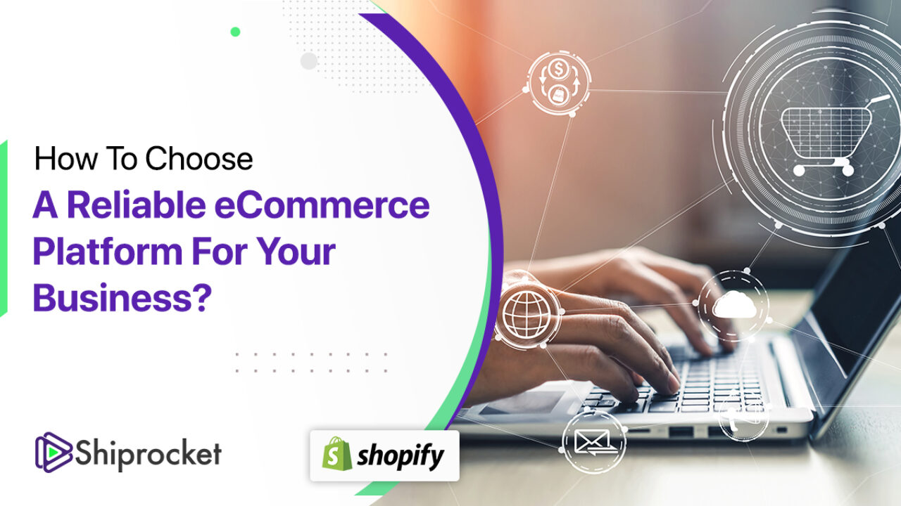

Basic Website

My first project as a developer was an exhilarating experience. I was tasked with creating a basic website for a local nonprofit organization. As a novice developer, I faced numerous challenges, from learning the fundamentals of web development to troubleshooting code issues. However, with determination and the support of my team, I successfully delivered a functional website that showcased the organization's mission and activities. This project not only honed my technical skills but also taught me the value of collaboration and perseverance in the world of software development. It was a rewarding and memorable beginning to my journey as a developer 😃.
Developing a mobile app

In my second project as a developer, I had the opportunity to work on a more complex task, which was both exciting and challenging. I was part of a team developing a mobile app for a startup company. This project demanded a deeper understanding of app development, user interface design, and database integration. I collaborated closely with my colleagues, sharing ideas and problem-solving together. While there were moments of frustration, the satisfaction of seeing the app come to life and being used by real users was immensely rewarding. It reinforced my passion for development and motivated me to continue learning and growing in my role as a developer.
Building a robust e-commerce platform
My third project as a developer marked a significant milestone in my career. I was entrusted with leading a team in building a robust e-commerce platform for a medium-sized business. This project challenged me to take on a leadership role, plan project timelines, and ensure effective communication within the team. Developing complex features like secure payment gateways and inventory management systems was a thrilling experience. Despite encountering some hurdles along the way, we successfully delivered the project on time and within budget. This experience not only expanded my technical skills but also enhanced my project management and leadership abilities, making me more confident and capable as a developer.